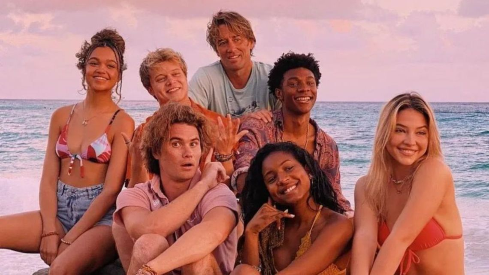
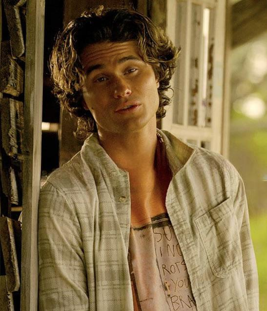
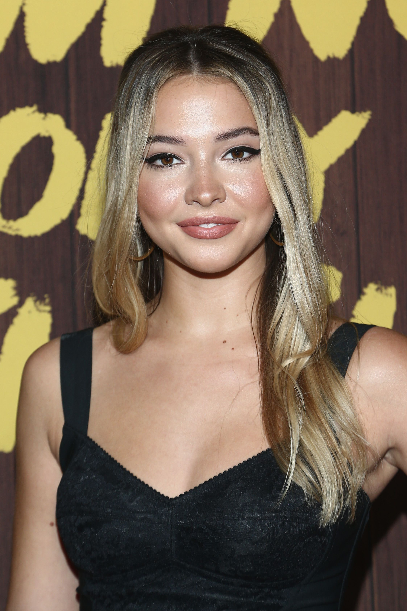
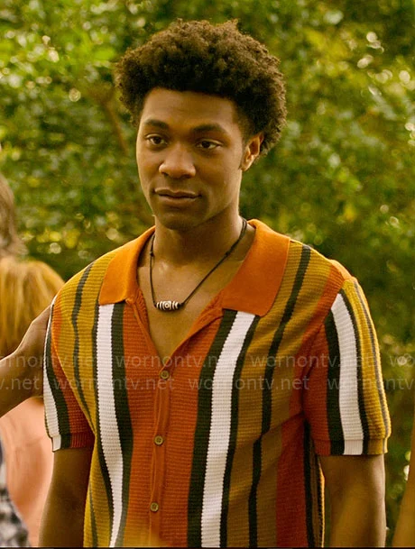

Outer Banks (OBX) es una serie web estadounidense de acción–aventura,
misterio y drama adolescente creada por Josh Pate, Jonas Pate y Shannon Burke y lanzada en Netflix.
El trío también sirve como productores ejecutivos, con Rock Fish y Red Canoe Productions como empresas productoras.
La serie sigue a John B. (Chase Stokes) y sus amigos mientras se embarcan en una búsqueda de un tesoro legendario que
su padre también había buscado antes de desaparecer en el océano Atlántico.

Personajes principales
JJ
Pankow nació y creció en Ketchikan, Alaska.Comenzó su interés por la actuación y
la producción en algún momento de la escuela media a través de Internet.
Asistió a Ketchikan High School donde jugó al fútbol y participó en eventos de campo a través.
Pankow originalmente consideró ir a la escuela culinaria, pero optó por convertirse en actor
y se unió a un lote de 2016-2017 en un instituto de actuación.
Nacimiento 12 de agosto de 1998
Ketchikan, Alaska
Kiara
Ella es de ascendencia africana e italiana, y fue adoptada por padres blancos. Es la menor de 7 hermanos.
Su madre adoptiva murió en 2018, ella y sus dos hermanas tienen un tatuaje en honor a su memoria.
Bailey asistió a la escuela secundaria East Forsyth en Kernersville.
Nacimiento 29 de enero de 1999
Kernersville, Carolina del Norte, Estados Unidos
John B
Stokes nació y vivió los primeros años de su vida en Annapolis, Maryland,
y en la adolescencia se trasladó a Orlando, Florida, donde asistió a Timber Creek High School.
Al crecer, jugó hockey sobre hielo.
Nacimiento 16 de septiembre de 1992
Annapolis, Maryland, Estados Unidos
Sarah Cameron
Cline pasó algunos de sus primeros veranos en la ciudad de Nueva York trabajando en anuncios televisivos.
Pronto comenzó con pequeños papeles como Chloe en la película Boy Erased y Taylor Watts en la serie Vice Principals.
También tuvo papeles de reparto en las series The Originals y Stranger Things.
Nacimiento 21 de diciembre de 1997
Carolina del Sur, Estados Unidos
Pope
Daviss nació y se crio en Conroe, Texas y estudió en la Conroe High School, donde jugaba a fútbol americano. Tiene una hermana menor.
Su madre vendió su casa y se mudaron a California para que él siguiera su carrera como actor.
Nacimiento 28 de febrero de 2000
Nashville, Tennessee, Estados Unidos
Cleo
También es conocida por su papel de Danielle Turner en la serie Greenleaf.
Comenzó a actuar mientras estaba en un campamento de teatro de verano, donde apareció en una producción de Treasure Island.
Ella es de ascendencia caribeña. Nació en Connecticut, pero ella y su familia se mudaron más tarde al sur de Florida.
Nacimiento 18 de enero de 1991
Los ángeles, California,Estados Unidos
Temporadas
Temporadas
Episodios
Lanzamiento
1
10
15 de abril de 2020
2
10
30 de julio de 2021
3
10
23 de febrero de 2023
4
10
10 de octubre de 2024/7 de noviembre de 2024
Actores
Rudy Pankow (JJ):26 años
Madison Bailey (KIARA):26 años
Chase Stokes (JOHN B):32 años

Madelyn Cline (MADELINE CLINE):27 años

Jonathan Daviss (POPE):25 años

Carlacia Grant (CLEO):24 años